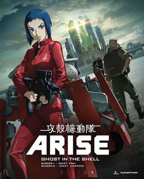

Referencias y parecidos
- 1.- La «lluvia digital» de Matrix (los patrones de texto verde que caen representando el código de Matrix) reestructuran la apertura de la primera película de Ghost in the Shell, estrenada en 1995 (4 años antes que Matrix).
- 2.- La escena del comienzo en la que Trinity escapa de los agentes, en la toma donde aterriza sobre el techo, es casi idéntica a la toma en que la mayor Kusanagi persigue al primer 'títere' en Ghost in the Shell.
- 3.- La toma en la que el primer 'títere' escapa de Batou en el mercado en la primera Ghost in the Shell y la toma en la que Neo escapa de un trío de agentes en el mercado. Ambas tomas coinciden en la explosión de sandías y en los civiles aterrorizados por el fuego cruzado de la persecución.
- 4.- El famoso tiroteo del vestíbulo, que presenta a Neo y Trinity protegiéndose del fuego detrás de unos pilares de piedra, y la escena de GITS donde Kusanagi lo hace durante su batalla contra el tanque.
- 5.- También existe una clara relación entre el concepto de la matriz y los cerebros interconectados cibernéticamente como inconsciente colectivo presentados en Ghost in the Shell.
- 6.- Hay similitudes entre los argumentos de ambas películas. En GITS, al comienzo Kusanagi busca al Puppet Master para arrestarlo, mientras que sobre el final de la película, se revela que en realidad es el maestro de las marionetas quien busca a Kusanagi para fusionarse con ella. En Matrix, Neo es quien al comienzo busca a Morfeo, cuando finalmente lo encuentra, Morfeo le confiesa que en realidad era él quien estuvo buscando toda su vida al «Elegido» (Neo).
- 7.- Ambas series manejan mitologías similares, así como sus temas y arquetipos están relacionados con el libro Neuromancer de William Gibson y otras de sus historias.
- 8.- En la puerta de la habitación de Neo se puede apreciar el número 101, el cual tiene una notoria referencia a la Habitación 101 de la novela 1984 de George Orwell.
Finalmente, las hermanos Wachowski, creadores de la trilogía Matrix, reconocieron la influencia de Ghost in the Shell en una entrevista.
